중앙연구원
한국 조선해양기술을 선도하는 업계 대표 연구원
연구소
중앙연구원은 회사의 미래 성장 동력으로서 선박∙해양플랜트∙특수선
분야의 기술발전을 주도하고 있습니다.
이를 위해, 시흥과 옥포에 최첨단 연구설비와 우수한 연구 인력을 갖춘
3개의 연구소 조직으로 구성되어 있습니다.
중앙연구원 시흥캠퍼스
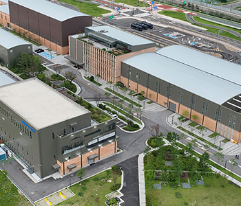중앙연구원 옥포조선소
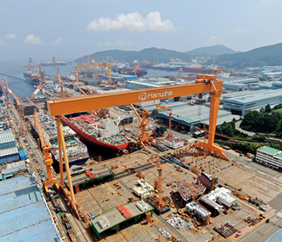-
directions_boat
선박해양연구소
선박해양연구소는
선박 기본 성능 극대화를 위해
고성능, 고효율, 친환경 선박을 위한
연구개발을 수행하고 있습니다.directions_boat- 선박해양연구소
- - 고효율 / 친환경 기술 연구개발
- - 주력선종 구조 최적화 및 경량화
연구개발 - - 진동 소음 저감장치 연구개발
- - 선박 운항 경제성 제고 기술 연구개발
-
psychiatry
특수성능연구소
특수성능연구소는 탈탄소화와
디지털화 실현을 위해 친환경 에너지와
스마트십을 연구개발하고 있습니다.
또한 한국 대형 조선소 최초의
해양 방산 전문 연구소로서 첨단 방산 제품∙함정 연구개발을 수행하고 있습니다.psychiatry- 특수성능연구소
- - 방산분야 핵심기술 연구개발
- - 친환경 에너지 기술 연구개발
- - 통합 자동화 시스템 연구개발
- - 스마트십/자율운항 기술 연구개발
-
engineering
산업기술연구소
산업기술연구소는
첨단 생산 시스템 구축을 위해
융복합 기술을 응용한 생산기술 개발과 스마트 팩토리 구현에 대한 연구개발을 수행하고 있습니다.engineering- 산업기술연구소
- - 용접기술 연구개발
- - 자동화 시스템 연구개발
- - 도장 기술 연구개발
- - 스마트 제조 시스템 및 공정 최적화
연구개발
연구 설비
-
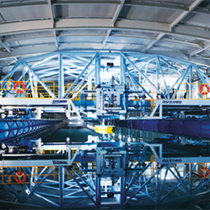
- 예인수조 (300m x 16m x 7m)
- 실제 선박과 동일한 형상으로 축소 제작한 모형선으로 해상에서의 선박 저항/추진/운동/조종 성능을 예측하고 평가할 수 있는 시험 설비
-
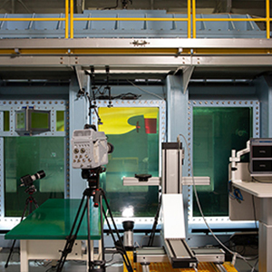
- 공동수조 (13.0m x 2.8m x 2.4m)
- 프로펠러 캐비테이션, 침식, 변동압력, 수중방사소음, 3차원 유동계측 시험 설비
-
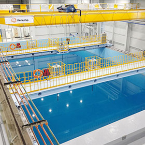
- 음향수조 (25m x 15m x 10m)
- 수중에서 음파를 이용하여 대상 표적의 음향학적 특성 분석 설비
-
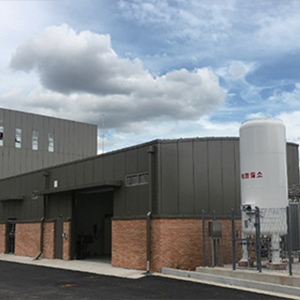
-
친환경연료 LBTS
(Land Based Test Site) - 친환경 연료 시스템 연구개발 및 실증을 위한 시험 설비
-
친환경연료 LBTS
-
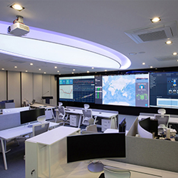
- DS4 육상관제센터 (DSME Smartship Solution)
- 선박운항데이터를 위성통신을 통해 실시간으로 수집, 분석하여 보다 더 효율적이고 안전한 선박 운항을 구현하기 위한 설비
-
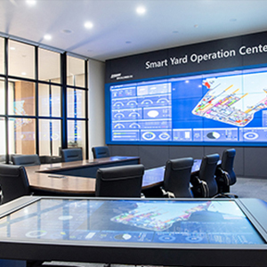
- 스마트야드 실증센터
- 최신 ICT 기술을 야드에 적용하여 실시간 생산 Data의 연결화, 자동화, 지능화를 통해 생산 계획을 최적화하고 생산 운영 효율 향상 연구 설비
-
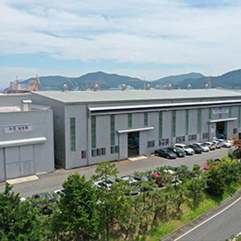
- 지능형 생산기술 연구센터
- 친환경 생산기술과 안전성 극대화를 위한 연구개발 및 스마트야드 구현을 위한 최신 생산기술과 Digital Transformation 연구개발 설비
-
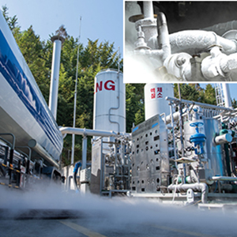
- 에너지시스템 실험센터
- 다양한 LNG System에 대한 테스트와 탈탄소화를 대비한 친환경 연료 테스트 설비
-
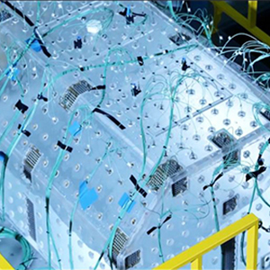
- 슬로싱 연구센터
- 극저온 액화 화물창 및 연료탱크의 안전성 확보를 위한 슬로싱 모형 시험 설비